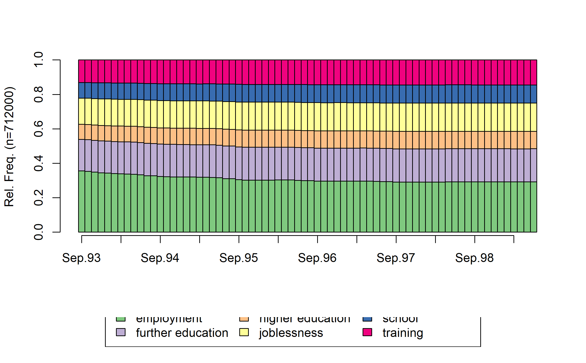
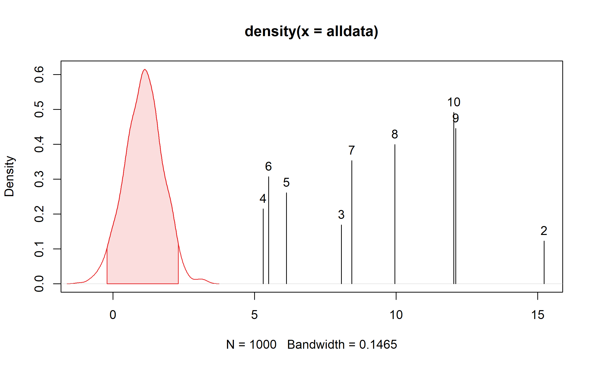
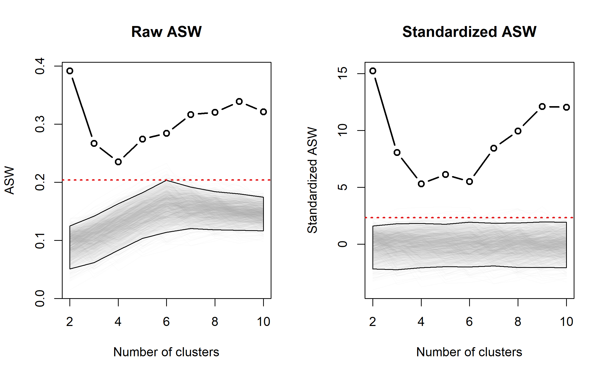
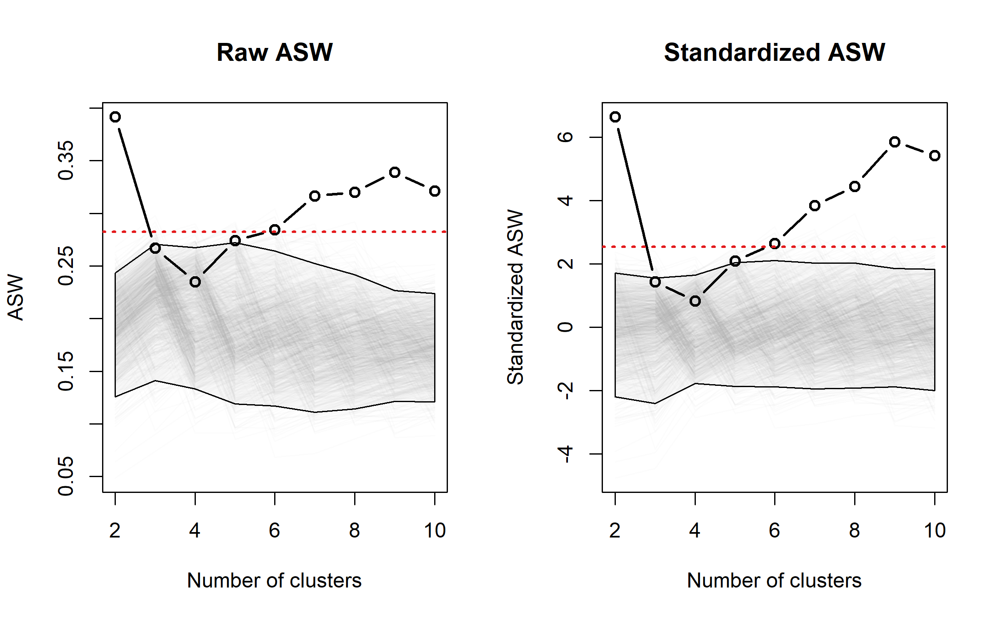
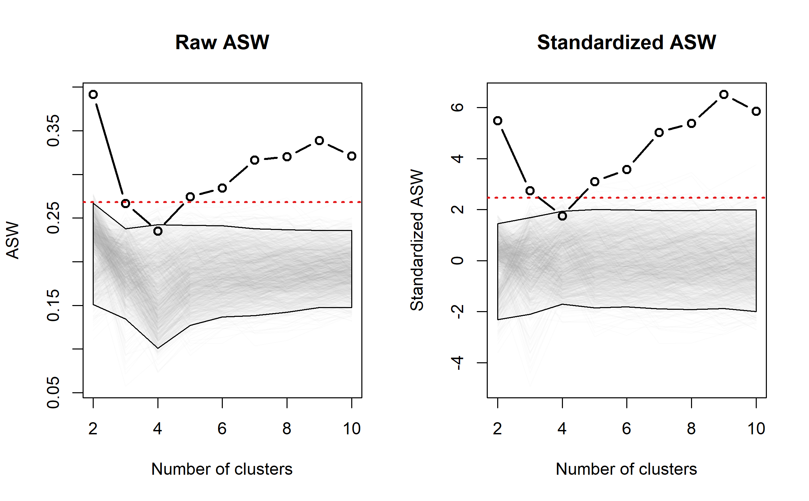
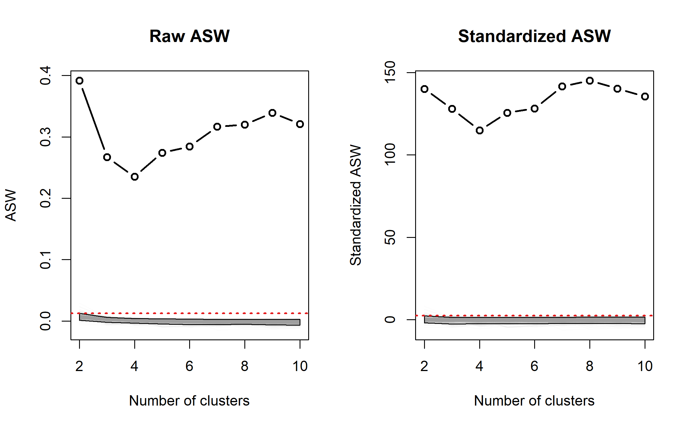
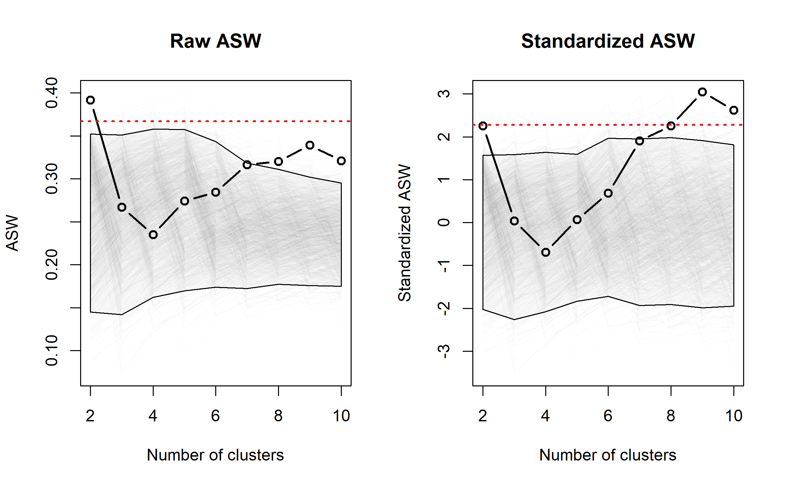
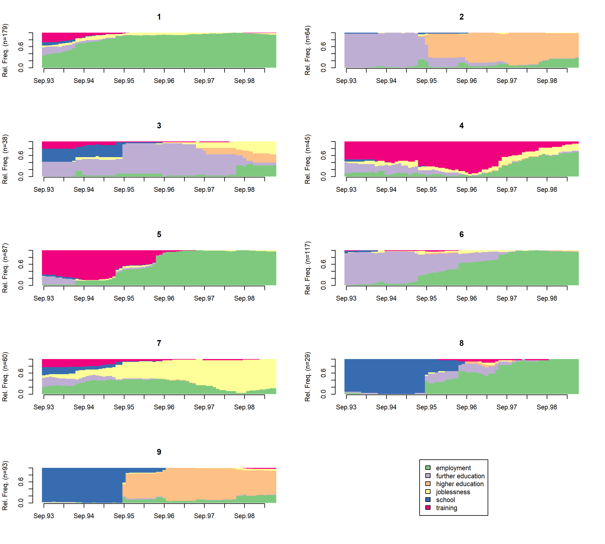

## Loading the TraMineR library
library(TraMineR)
## Loading the data
data(mvad)
## State properties
mvad.alphabet <- c(
"employment",
"FE",
"HE",
"joblessness",
"school",
"training"
)
mvad.lab <- c(
"employment",
"further education",
"higher education",
"joblessness",
"school",
"training"
)
mvad.shortlab <- c("EM", "FE", "HE", "JL", "SC", "TR")
## Creating the state sequence object
mvad.seq <- seqdef(
mvad,
17:86,
alphabet = mvad.alphabet,
states = mvad.shortlab,
labels = mvad.lab,
xtstep = 6
)Validating sequence analysis typologies using parametric bootstrap
software
A quick introduction to the R code for typology validation with WeightedCluster’s seqnullcqi().
This tutorial was first published on the old SAA website in October 2023. It has been re-run in October 2026 with {TraMineR} 2.2.14 and {WeightedCluster} 2.0. Because the bootstrap relies on random draws, the bootstrapped values may differ slightly from the original post.
Introduction
This document provides a very quick introduction to the R code needed to use parametric bootstraps for typology validation in sequence analysis. Readers interested in the methods and the exact interpretation of the results are referred to:
- Studer, M. (2021). Validating sequence analysis typologies using parametric bootstraps. Sociological Methodology, 51(2), 290–318. https://doi.org/10.1177/00811750211014232
Creating the state sequence object
For this example, we will use the mvad dataset. Let’s start with the creation of the state sequence object.
Creating the typology
We will now create a typology using cluster analysis. Readers interested in more detail are referred to the WeightedCluster library manual, which goes into the details of the creation and computation of cluster quality measures.
We start by computing dissimilarities with the seqdist function and the Hamming distance. We then use Ward clustering to create a typology of the trajectories. For this step, we recommend the use of the fastcluster library, which considerably speeds up the computations.
## Using fastcluster for hierarchical clustering
library(fastcluster)
## Distance computation
diss <- seqdist(mvad.seq, method = "HAM")
## Hierarchical clustering
hc <- hclust(as.dist(diss), method = "ward.D")We can now compute several cluster quality indices using the as.clustrange function from two to ten groups.
# Loading the WeightedCluster library
library(WeightedCluster)
# Computing cluster quality measures.
clustqual <- as.clustrange(hc, diss = diss, ncluster = 10)
clustqual PBC HG HGSD ASW ASWw CH R2 CHsq R2sq HC
cluster2 0.55 0.71 0.69 0.39 0.39 184.57 0.21 347.47 0.33 0.14
cluster3 0.49 0.57 0.57 0.27 0.27 139.53 0.28 261.70 0.42 0.22
cluster4 0.46 0.58 0.57 0.24 0.24 124.40 0.35 228.94 0.49 0.23
cluster5 0.51 0.68 0.67 0.27 0.28 118.20 0.40 241.78 0.58 0.18
cluster6 0.52 0.70 0.70 0.28 0.29 117.08 0.45 241.96 0.63 0.17
cluster7 0.55 0.78 0.78 0.32 0.32 114.14 0.49 245.83 0.68 0.13
cluster8 0.56 0.82 0.82 0.32 0.33 109.22 0.52 244.85 0.71 0.11
cluster9 0.57 0.85 0.85 0.34 0.35 105.74 0.55 255.12 0.74 0.09
cluster10 0.55 0.85 0.84 0.32 0.33 101.81 0.57 244.05 0.76 0.10Parametric bootstrap
Parametric bootstrap aims to provide baseline values obtained by clustering similar but non-clustered data. This can be computed using the seqnullcqi function with the following parameters:
R: number of bootstraps.model: the null model (see the sections below).seqdist.args: list of arguments passed toseqdist(should be identical to the first call toseqdist).hclust.method: hierarchical clustering method (should be identical to the original clustering).kmedoid: ifTRUE, use PAM (and thewcKMedRangefunction) instead of hierarchical clustering.parallel: ifTRUE, use parallel computing to speed up the computations.
Combined randomization
The following R code estimates expected values of the cluster quality indices when clustering similar sequences that are not clustered according to the "combined" model, using the Hamming distance and Ward hierarchical clustering. We set parallel = TRUE to use parallel computing. You can use progressbar = TRUE to show a progress bar of the computations (not meaningful here within a document).
set.seed(1)
bcq.combined <- seqnullcqi(
mvad.seq,
clustqual,
R = 1000,
model = "combined",
seqdist.args = list(method = "HAM"),
hclust.method = "ward.D",
parallel = TRUE
)Once the parametric bootstrap is computed (may take a while…), the results are stored in the bcq.combined object. Printing the object (just by writing its name) already provides several pieces of information: the standardized cluster quality indices and the inconclusive interval (standardized values).
bcq.combinedParametric bootstrap cluster analysis validation
Sequence analysis null model: list(model = "combined")
Number of bootstraps: 1000
Clustering method: hclust with ward.D
Seqdist arguments: list(method = "HAM")
PBC HG HGSD ASW
cluster2 6.07 6.01 6.1 15.23
cluster3 4.29 4.31 4.4 8.07
cluster4 2.31 2.67 2.74 5.31
cluster5 2.2 2.52 2.57 6.12
cluster6 1.41 1.75 1.78 5.5
cluster7 2.4 3.16 3.2 8.44
cluster8 3.15 4.15 4.18 9.96
cluster9 3.88 4.74 4.77 12.11
cluster10 3.3 4.4 4.43 12.04
Null Max-T 0.95 interval [-0.13; 2.41] [-0.08; 2.23] [-0.1; 2.24] [-0.22; 2.32]
ASWw CH R2 CHsq
cluster2 15.16 27.76 23.55 31.44
cluster3 8.03 23.95 19.45 24.36
cluster4 5.25 23.43 18.32 20.75
cluster5 6.08 24.88 18.7 23.21
cluster6 5.45 27.37 19.63 22.99
cluster7 8.37 31.69 21.86 27.27
cluster8 9.87 34.78 23.4 30.87
cluster9 11.99 37.98 24.91 36.88
cluster10 11.9 40.41 26 37.98
Null Max-T 0.95 interval [-0.21; 2.31] [-1.18; 2.56] [-1.18; 2.49] [-1.1; 2.64]
R2sq HC
cluster2 23.48 -5.18
cluster3 17.19 -4.65
cluster4 14.22 -3.23
cluster5 14.5 -3.33
cluster6 13.69 -2.89
cluster7 15.21 -4.91
cluster8 16.41 -6.41
cluster9 18.21 -7.4
cluster10 18.61 -7.42
Null Max-T 0.95 interval [-1.11; 2.54] [-0.04; 2.69]Looking at the numbers, 2, 9 and 10 groups stand out. To get non-standardized values, use norm = FALSE. Notice that inconclusive ASW intervals are well below the recommended values (over 0.5).
print(bcq.combined, norm = FALSE)Parametric bootstrap cluster analysis validation
Sequence analysis null model: list(model = "combined")
Number of bootstraps: 1000
Clustering method: hclust with ward.D
Seqdist arguments: list(method = "HAM")
PBC HG HGSD ASW
cluster2 0.55 0.71 0.69 0.39
cluster3 0.49 0.57 0.57 0.27
cluster4 0.46 0.58 0.57 0.24
cluster5 0.51 0.68 0.67 0.27
cluster6 0.52 0.7 0.7 0.28
cluster7 0.55 0.78 0.78 0.32
cluster8 0.56 0.82 0.82 0.32
cluster9 0.57 0.85 0.85 0.34
cluster10 0.55 0.85 0.84 0.32
Null Max-T 0.95 interval [0.45; 0.54] [0.69; 0.78] [0.68; 0.78] [0.14; 0.2]
ASWw CH R2
cluster2 0.39 184.57 0.21
cluster3 0.27 139.53 0.28
cluster4 0.24 124.4 0.35
cluster5 0.28 118.2 0.4
cluster6 0.29 117.08 0.45
cluster7 0.32 114.14 0.49
cluster8 0.33 109.22 0.52
cluster9 0.35 105.74 0.55
cluster10 0.33 101.81 0.57
Null Max-T 0.95 interval [0.15; 0.21] [39.84; 57.15] [0.31; 0.34]
CHsq R2sq HC
cluster2 347.47 0.33 0.14
cluster3 261.7 0.42 0.22
cluster4 228.94 0.49 0.23
cluster5 241.78 0.58 0.18
cluster6 241.96 0.63 0.17
cluster7 245.83 0.68 0.13
cluster8 244.85 0.71 0.11
cluster9 255.12 0.74 0.09
cluster10 244.05 0.76 0.1
Null Max-T 0.95 interval [74.91; 100.05] [0.48; 0.53] [0.33; 0.44]Several plots can then be used to inspect the results using the plot command and the type argument. First, one can look at the sequences generated by the null model by using type = "seqdplot".
plot(bcq.combined, type = "seqdplot")
The overall distribution of the CQI values can be plotted using type = "density". In this case, one also needs to specify the CQI to be used. All tested numbers of groups are found to be significant. Any CQI computed by as.clustrange() can be used here. To show the density of the average silhouette width ("ASW"), one can use:
plot(bcq.combined, stat = "ASW", type = "density")
2.5% 97.5%
-0.2176533 2.3174904 By using type = "line", we plot the obtained and bootstrapped CQI values depending on the number of groups.
plot(bcq.combined, stat = "ASW", type = "line")
Randomized sequencing
To use another null model, one only needs to change the model argument of the seqnullcqi function. The randomized sequencing keeps the duration attached to each state, but randomizes the ordering of the spells. It can be used to uncover the sequencing structure of the data.
set.seed(2)
bcq.seq <- seqnullcqi(
mvad.seq,
clustqual,
R = 1000,
model = "sequencing",
seqdist.args = list(method = "HAM"),
hclust.method = "ward.D",
parallel = TRUE
)We can then plot the results as before. Notice that solutions between 3 and 6 are below the critical line.
plot(bcq.seq, stat = "ASW", type = "line")
Randomized duration
The randomized duration keeps the same ordering of the states, but randomizes the time spent in each spell. It can be used to uncover the duration-related structure of the data.
set.seed(3)
bcq.dur <- seqnullcqi(
mvad.seq,
clustqual,
R = 1000,
model = "duration",
seqdist.args = list(method = "HAM"),
hclust.method = "ward.D",
parallel = TRUE
)We can then plot the results as before. The 3- and 4-group solutions are below the “significance line”. Otherwise, the ranking of the solutions is the same.
plot(bcq.dur, stat = "ASW", type = "line")
State independence
The state independence null model generates sequences, position by position, independently of the previous state. This is a quite unrealistic assumption for longitudinal data.
set.seed(4)
bcq.stateindep <- seqnullcqi(
mvad.seq,
clustqual,
R = 1000,
model = "stateindep",
seqdist.args = list(method = "HAM"),
hclust.method = "ward.D",
parallel = TRUE
)Bootstrapped CQI values are extremely low compared to our clustering, meaning that we have a strong longitudinal structure (not surprising!).
plot(bcq.stateindep, stat = "ASW", type = "line")
First-order Markov null model
The first-order Markov null model generates sequences using time-invariant transition rates. As a result, the generated sequences are often quite similar to the observed ones. This model can uncover structure stemming from time-dependent transition rates.
set.seed(5)
bcq.Markov <- seqnullcqi(
mvad.seq,
clustqual,
R = 1000,
model = "Markov",
seqdist.args = list(method = "HAM"),
hclust.method = "ward.D",
parallel = TRUE
)plot(bcq.Markov, stat = "ASW", type = "line")
Choosing a solution
The various null models lead to the same conclusions and ranking of the solutions. Solutions between 3 and 6 groups were not always above the critical lines (in the sequencing null model for instance), and can be avoided. We generally saw good clustering quality for a clustering in 9 groups. The solution is shown below.
seqdplot(mvad.seq, clustqual$clustering$cluster9, border = NA)